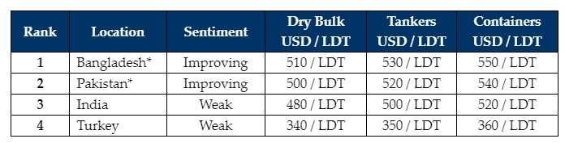

inWeekly Demolition Reports05/02/2024

Despite both Bangladeshi and Pakistani markets making noticeable improvements over recent weeks,unfortunately, the ongoing shortage in the global availability of ‘market’ tonnage has ensured sales remain noticeably extricated, which has in turn restricted the industry’s ability at assessing where levels really stand today. As evident from the number of arrivals & beachings this week (see Indian sub-continent port reports on Page 8), an increasing number of Ship Recyclers have clearly managed to and are reportedly still in the process of obtaining further approvals on L/Cs from their respective banks. As a result, there is now a noticeable disparity in offers emanating from recyclers from the same sub-continent destination, so fractured is the sub-continent ship recycling purview on the immediate future of fundamentals & vessel pricing across the board.
Moreover, despite both, steel plate prices stabilizing & even making noteworthy improvements (for e.g. the recent USD 50/Ton jump in Bangladeshi plate prices) and sub-continent currencies continuing to find stable footing & even registering improvements this week, there remains a limited number of aggressive end Buyers who have been actively concluding the number of small LDT, private tonnage that is seemingly on offer week-after-week – a volume that is not only insufficient in sustaining the needs of Ship Recyclers the world over, but it is also a volume that is continually and increasingly affected by the ongoing war in the Middle East.
Speaking of, of increasing geopolitical concerns of late have been the ongoing skirmishes between Western Forces and Middle Eastern terror groups who have now pushed the U.S. into retaliatory strikes against key targets in Syria & Iraq. Moreover, as the overall conflict seems to increasingly gain a stronghold, attacks on passing merchant vessels in the Red Sea continue week-after-week, resulting in freight rates remaining unseasonably high and this continues to stifle the number of vessels that are potential recycling candidates, indicating that it will likely remain quieter and for far longer than previously anticipated.
This trend is also likely persist as the industry approaches the traditionally quieter Chinese New Year Holidays next week, leaving a positively underwhelming Q1 2024 for the global ship recycling markets & potential vessel volumes to come, all a time interesting developments on the regulatory fronts are seeing HKC certified Indian recycling yards being cast into the spotlight & under (re)consideration for EU approval once again, while the Norwegian government has similarly pledged US$ 1.364 million last week, to help aid the upgrade of facilities in Bangladesh.
For week 5 of 2024, GMS demo rankings / pricing for the week are as below.

📄 Download PDF: Ship-recycling-market-insight-week-05-2024-Fractured.pdfSource: GMS,Inc. ,https://www.gmsinc.net/gms_new/index.php/web